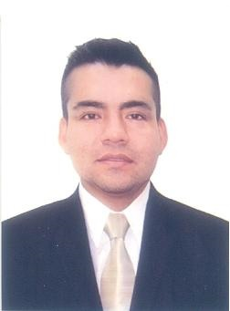

|
Nombres y Apellidos: Edwin Rolando Ventura Esquivel Estado Civil: Soltero Nacionalidad: peruano DNI: 41854812 Nº de Colegiatura: 7254 Colegio de Biólogos del Perú Fecha de Nacimiento: 05 de febrero de 1983 Edad: 37 años Lugar de Nacimiento: Trujillo – La Libertad Dirección: Mz. F Lote 3 – Urb. La Encalada – Santa Anita Celular: 955954898 Correo Electrónico: eroves_20@hotmail.com |
 |
Resumen Funcional
Soy Profesional Biólogo-Microbiólogo; con el grado de Maestría en Gestión Ambiental y con Estudios de Especialización en Monitoreo Ambiental; Gestión y Manejo Integral de Residuos Sólidos Biocontaminados. Me he desempeñado en áreas relacionadas a Salud Pública, Gestión Ambiental y Docencia Universitaria, desarrollando mi labor de manera eficiente y con empeño lo que me permitió el reconocimiento de las instituciones en el área.
Experiencia Profesional
• Organismo de Evaluación y Fiscalización Ambiental
Sub Dirección de Sanción y Aplicación de Incentivos – Especialista en Procedimientos Administrativos – Profesional II.
Verificación y análisis de los procedimientos administrativos sancionadores, medidas administrativas y/o multas coercitivas, así como su verificación de cumplimiento, de corresponder; organización y verificación del correcto diligenciamiento de todas las actuaciones administrativas que correspondan en el marco de los procedimientos administrativos sancionadores; sistematización, validación y actualización de información estadística de los procedimientos administrativos sancionadores en primera instancia de la carga procesal; entre otros.
• Instituto Nacional de Salud del Niño – San Borja
Toma de muestras biológicas para proyectos de investigación y trabajos experimentales.
Control Sanitario de especímenes de Investigación para Proyectos y entrenamientos de las diferentes especialidades médicas, gestión de los residuos generados (comunes, biocontaminados y especiales) en los ambientes de trabajo.
• Instituto Nacional de Salud del Niño – San Borja
Toma de muestras biológicas para proyectos de investigación y trabajos experimentales.
Integrante del Equipo de Docencia e Investigación Experimental. Control Sanitario de especímenes de Investigación para proyectos y entrenamientos; gestión y manejo de los residuos generados (comunes, biocontaminados y especiales) del servicio de investigación experimental. Control Sanitario de especímenes de Investigación para Proyectos y entrenamientos de las diferentes especialidades médicas.
• Dirección de Salud IV Lima Este
Responsable del Laboratorio de Salud Ambiental de la Dirección de Laboratorio de Salud Pública.
Recepción y Toma de muestra, Analista de muestras biológicas, interpretación de resultados, elaboración de informes, documentos relacionados al área. Integrante del equipo de gestión y manejo de residuos sólidos en establecimientos de salud público y privados.
• Dirección de Salud IV Lima Este
Integrante del Equipo de Salud Pública y Ambiental. Vigilancia de Residuos Sólidos generados en establecimientos de salud y servicios médicos de apoyo, en la jurisdicción, verificación y sistematización de los registros de las Empresas Prestadoras de Residuos Sólidos y Empresas Comercializadoras de Residuos Sólidos. Desarrollar acciones de fortalecimiento de capacidades a los establecimientos de salud sobre la gestión y manejo de residuos sólidos.
Vigilancia de Residuos Sólidos Biocontaminados de establecimientos de salud públicos y no públicos en la jurisdicción de la DISA IV Lima Este.
• Dirección Regional de Salud-Lima. DIRESA-LIMA.
Personal en el área de laboratorio de análisis clínico y laboratorio de aguas y alimentos de la Dirección Ejecutiva de Salud Ambiental. DESA y Salud Pública.
Analista de muestras biológicas, calidad de aguas y alimentos, toma de muestras, interpretación de resultados, vigilancia en la gestión y manejo de residuos sólidos de la jurisdicción.
• Servicio de Agua Potable y Alcantarillado de La Libertad SEDALIB S.A.
Personal en el área de Laboratorio de Microbiología de la División de Control de Calidad de Aguas.
Responsable de la división de control de calidad, analista de calidad de aguas, toma de muestras de agua, análisis físico – químico y microbiológico, e Interpretación de resultados.